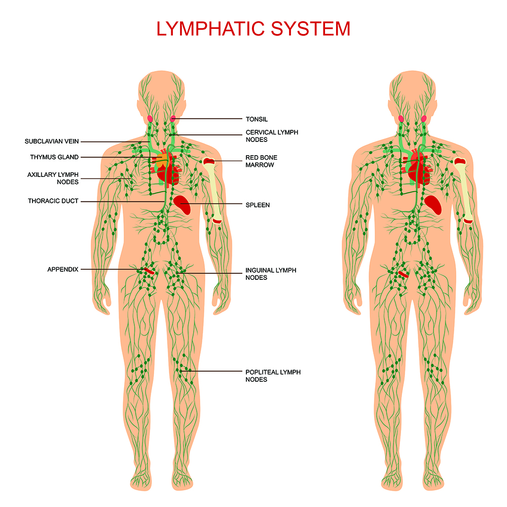

ระบบน้ำเหลือง

●ความสำคัญและหน้าที่
- ระบบน้ำเหลืองเป็นส่วนหนึ่งของระบบไหลเวียนในร่างกาย ทำหน้าที่นำของเหลวส่วนเกินจากเนื้อเยื่อกลับสู่กระแสเลือด ช่วยลำเลียงไขมันบางชนิดจากลำไส้เล็ก และมีบทบาทสำคัญในการป้องกันเชื้อโรคและสิ่งแปลกปลอม
● องค์ประกอบสำคัญของระบบน้ำเหลือง
1. น้ำเหลือง
- เป็นของเหลวที่เกิดจากของเหลวระหว่างเซลล์เข้าสู่หลอดน้ำเหลือง ทำหน้าที่ลำเลียงสารบางชนิดและเซลล์ภูมิคุ้มกัน
2. หลอดน้ำเหลือง
- ทำหน้าที่ลำเลียงน้ำเหลืองกลับเข้าสู่ระบบหมุนเวียนเลือด
3. ต่อมน้ำเหลือง
- ทำหน้าที่กรองน้ำเหลืองและเป็นบริเวณที่มีเซลล์ภูมิคุ้มกันจำนวนมาก จึงมีบทบาทในการตรวจจับและตอบสนองต่อเชื้อโรค
4. ม้าม
- ช่วยกรองเลือด กำจัดเซลล์เม็ดเลือดแดงที่เสื่อมสภาพ และมีส่วนเกี่ยวข้องกับการตอบสนองทางภูมิคุ้มกัน
5. ต่อมไทมัส
- เป็นอวัยวะที่เกี่ยวข้องกับการพัฒนาเซลล์ที ซึ่งเป็นเซลล์สำคัญในระบบภูมิคุ้มกัน
● การดูแลระบบน้ำเหลือง
- ควรรับประทานอาหารที่มีประโยชน์ ดื่มน้ำให้เพียงพอ ออกกำลังกายให้เหมาะสม พักผ่อนให้เพียงพอ และรักษาสุขอนามัยเพื่อลดความเสี่ยงต่อการติดเชื้อ